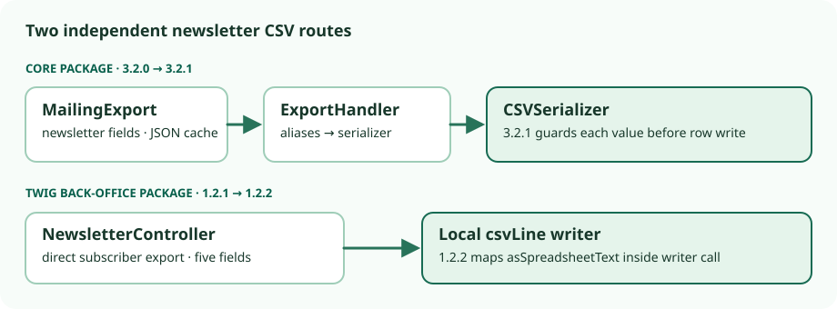

Newsletter export decision · 2 Nov 2026 · tagged-source inspection
Thelia newsletter CSV: check both packages before opening it in a spreadsheet
Keep the existing approved export workflow. Before opening subscriber CSV in a spreadsheet, verify the installed thelia/core and thelia/backoffice-default-twig-template versions and the active export route. In the inspected 3.2 / 1.2 release lines, the source change is split between core 3.2.1 and Twig template 1.2.2. Upgrading core alone does not show that the back-office's direct newsletter download changed.

Version scope: inspect the installed pair
| Composer package | Advisory affected | Advisory patched | Source read here |
|---|---|---|---|
thelia/core | <3.1.2; ≥3.2.0, <3.2.1 | 3.1.2; 3.2.1 | 3.2.0 and 3.2.1 tags |
thelia/thelia | <3.1.2; ≥3.2.0, <3.2.1 | 3.1.2; 3.2.1 | Root manifests at 3.2.0 and 3.2.1; not an installed receipt |
thelia/backoffice-default-twig-template | <1.1.2; ≥1.2.0, <1.2.2 | 1.1.2; 1.2.2 | Separate template tags 1.2.1 and 1.2.2 |
The affected/patched matrix comes from the Thelia advisory. The 3.1/1.1 branches were not source-inspected here. The 3.2.1 root manifest requires the Twig package at ^1.2, not exactly 1.2.2; the 1.2.2 template manifest requires core at ^3.2, not exactly 3.2.1. Both manifests say GPL-3.0-or-later; that is package metadata, not a licence audit.
What changed in each path
| Export route | Earlier inspected tag | Later inspected tag |
|---|---|---|
| Core generic MailingExport MailingExport selects newsletter email/name fields and writes a JSON cache. ExportHandler applies aliases, then invokes the selected serializer. | 3.2.0 CSV serializer converts values and calls fputcsv without a formula guard in this path. | 3.2.1 CSV serializer calls SpreadsheetFormulaGuard::neutralize for each value before row writing. |
| Twig back-office direct download The controller writes email, first/last name, locale and timestamp itself; it does not call the core CSV serializer. | 1.2.1 controller passes subscriber values to fputcsv without a local formula guard in this method. | 1.2.2 controller maps asSpreadsheetText across all five fields inside its direct csvLine writer call. |
The two guards prefix a quote for leading =, +, -, @, tab or carriage return, except plain signed numbers; writers also quote separator/whitespace-containing values. This describes code, not exported bytes or spreadsheet interpretation. Core MailingExport filters newsletter.unsubscribed = 0; the inspected Twig method iterates NewsletterQuery without that filter. Do not infer identical row selection.
Static check: four expected passes, two deliberate failures
A dependency-free local assertion read saved files from the exact tagged sources. It required the core newsletter fields, JSON-cache handoff and alias/serializer call order; for the newer serializer it required the guard before row writing. It checked the Twig controller's three subscriber text getters and guard mapping inside its direct writer call. The older source patterns were checked separately.
| Source or controlled copy | Expected pattern | Observed assertion |
|---|---|---|
| Core 3.2.0 tagged source | Unguarded | PASS |
| Core 3.2.1 tagged source | Guarded | PASS |
| Twig 1.2.1 tagged source | Unguarded | PASS |
| Twig 1.2.2 tagged source | Guarded | PASS |
| Core 3.2.1 copy with guard call removed | Guarded | FAIL as intended; exit 1 |
| Twig 1.2.2 copy with writer-call map removed | Guarded | FAIL as intended; exit 1 |
The two mutations affected only copies, not the tagged source. This establishes that the narrow assertion detected removal of its target calls. String-pattern matching can miss alternate paths and behavior outside these files. No product export, CSV parser or spreadsheet was run. The 3.2.1 upstream integration test and 1.2.2 upstream HTTP test were read, not run; the latter skips when the template is inactive.
What a permissioned verification would need
- Record the deployed Composer lockfile, active back-office template, actual route and any custom fork/patch. A repository tag alone is not the installed package pair.
- Using only nonpersonal sample data, export an inert formula-like value and inspect raw CSV bytes. Keep it separate from subscriber records.
- In the actual spreadsheet/version and import mode, check open/import and save/reopen behavior without enabling dynamic content where possible. Reconcile whether opt-out rows appear in the chosen route.
OWASP's CSV-injection guidance describes separator and spreadsheet save/reopen risks. Its warning is a threat-model limit, not evidence that a particular Thelia deployment is bypassed. The Thelia advisory reports a spreadsheet handoff issue, but its customer-export lab observation is not an observed newsletter export in this check.
Source identities and uncertainty
Inspected core tags: 3.2.0 (cdff8e3) and 3.2.1 (72a72e4). Inspected template tags: 1.2.1 (08dde0e) and 1.2.2 (c45a736). No installed lockfile, active route, subscriber data, export, spreadsheet, or upstream tests were exercised. These source observations do not establish exploitability, runtime neutralization, or safety after spreadsheet resaving.